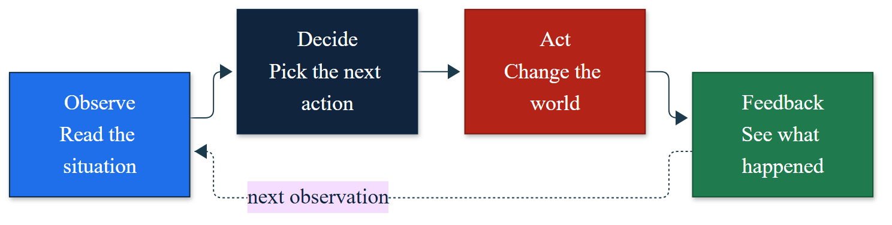
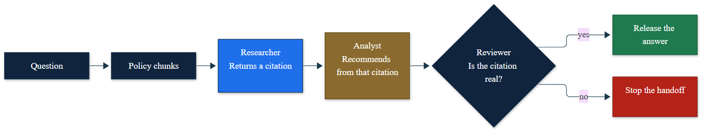
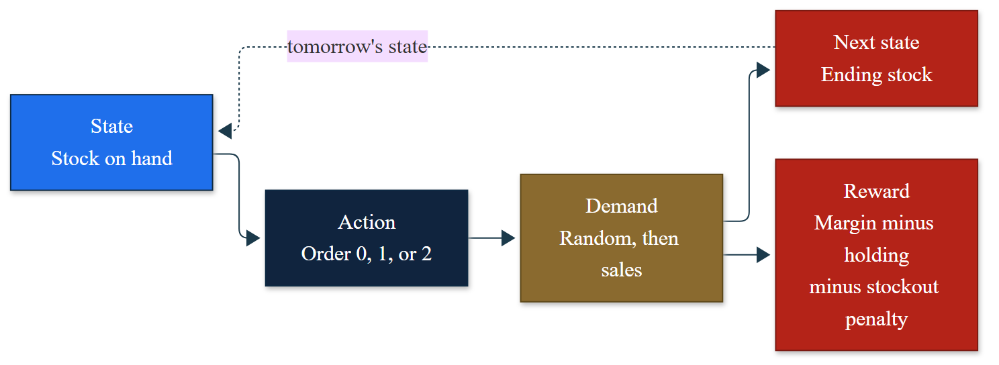
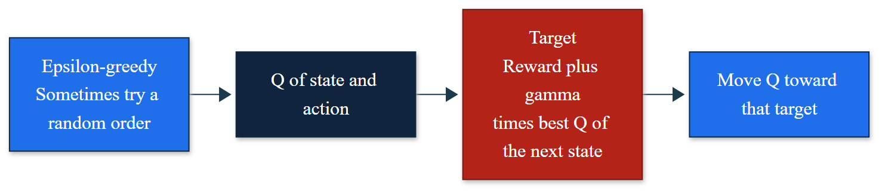
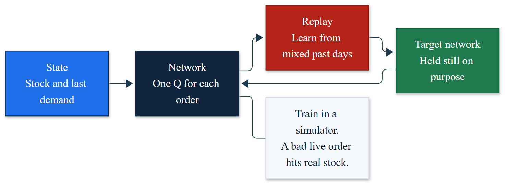
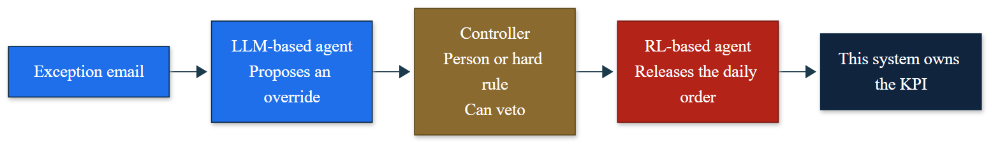
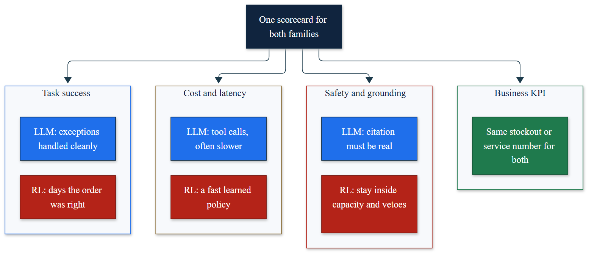
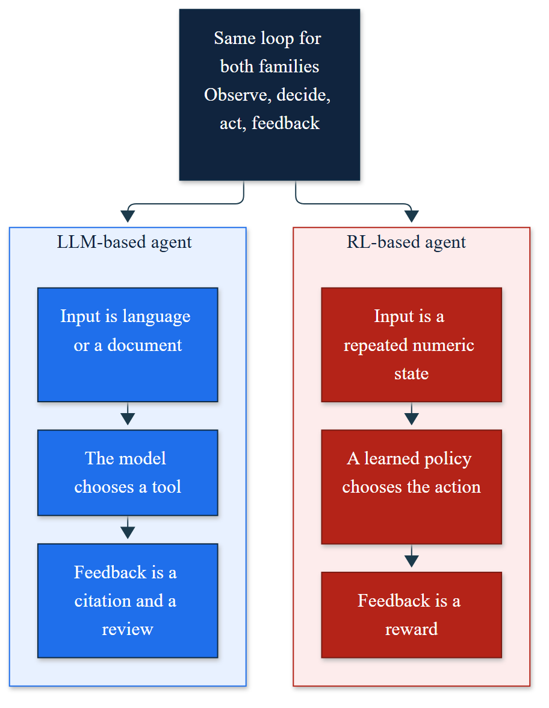

Olin Business School · Fall 2026 · 1.5 credits
DAT 5668
Agentic AI
Autonomous Decision-Making. Design agents that observe, decide, act, and use feedback. The course teaches language-model agents and reinforcement-learning agents as two ways to run that same loop.
How to follow
Each module is one week. Open the files from top to bottom. Instructors: Salih Tutun and Gerald Onwujekwe.
Open a notebook in Colab, or download the folder and run it in Python with NumPy. The cases are simulated course examples. Do not paste confidential data into a public tool. Quizzes stay on Canvas, so this page does not include quiz questions or answer keys.
Modules
Monday explains the idea. Wednesday is the practice. Colab opens the student notebook. GitHub is the same file if you want to read it first.
The agent loop
Monday: one loop for both families. Wednesday: a tool-using language agent on a refund ticket.

Retrieval, then bandits
Monday: a researcher, analyst, and reviewer handoff. Wednesday: one offer at a time, with the other rewards hidden.

Inventory, then a go/no-go memo
Monday: stock, order, demand, and reward. Wednesday: design one process both ways and vote before the memo.

Bellman updates and Q-learning
Monday: value iteration, Monte Carlo, and one temporal-difference update. Wednesday: run the unfinished agent, then write the update together.

Deep Q-learning
Monday: why a table breaks, then replay and a target network. Wednesday: compare a short training run with base-stock and make the deploy call.

Hybrids and governance
Monday: the language agent reads the exception and the learned policy releases the daily order. Wednesday: score both pilots on one sheet.

Presentations
One meeting. Groups of 1 to 3. About 7 minutes. State the loop, justify the family, compare a baseline, and include a governance note.

Two families, one loop
A chatbot is a poor inventory controller. A deep Q-network is a poor contract reviewer. Match the family to the input and the feedback.
The input is language or a document. The model acts by calling a tool. Feedback is a citation and a review. Weeks 1 and 2 Monday.
The input is a repeated numeric state. A learned policy picks the action. Feedback is a reward. Bandits, MDPs, Q-learning, and deep Q-networks.

Grades and tools
| Work | Share | Where |
|---|---|---|
| Quizzes, lowest score dropped | 30% | Canvas, before Monday |
| Homework | 20% | Individual, after Wednesday |
| Wednesday labs | 15% | In class |
| Project | 30% | Module 7 |
| Lab participation | 5% | In class |
Using the agent code in an assigned lab is allowed. Using Copilot, ChatGPT, or a similar tool to write a quiz, a homework write-up, or the project report is not allowed unless that assignment says you may, and then you cite how you used it. Prerequisites: DAT 5565 or DAT 6565. Software: Colab, Python, NumPy, and Matplotlib. Questions: salihtutun@wustl.edu.